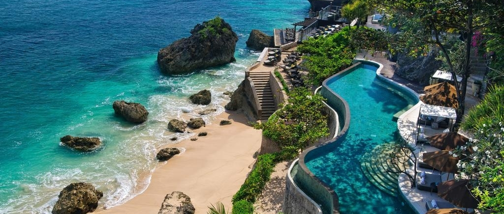

Try to arrive early since you only have 3 days to visit this beautiful island, and stay in one of the strategic places in central or south of Bali. Hire a car in advance and use it to head straight to two of the most famous temples in Bali. First head to Uluwatu Temple and double back to Tanah Lot Temple, in time to enjoy the amazing sunset there. If you are also in time, catch the famous Kecak Dance here that is set against the backdrop of this beautiful temple. End the day with a good dinner at Ultimo in Seminyak.
Ubud is the place one must explore when in Bali. Walk around the city would be a delight, there are many boutiques to shop around, spas and massages to pamper yourself and art or attractions to visit. Next, head out to the north to the neighbor town of Tegalalang to find classic rice terraces of Asia. Many tourists also like to stay in Ubud * as it is quite central to many of the attractions around Bali and yet away from the crowd in Kuta. After visiting Ubud, choose one of the beaches in Bali and get some swim and tan, popular choices are Balangan or Padang-padang beach. At sunset, head to Jimbaran and enjoy a seaside romantic dining.
Depending on how much time you have left, you may squeeze in one of two more things before heading to the airport for your departure. If you still want to explore more of Bali’s amazing temples, then I would recommend the Pura Ulun Danu Bratan, a beautiful mirrored temple by the lake. Or if you would prefer to pack in some last-minute shopping, there are few shopping places in Bali. Or if you still have not enough of the beaches, you know where to find more beautiful beaches in Bali to hang out.